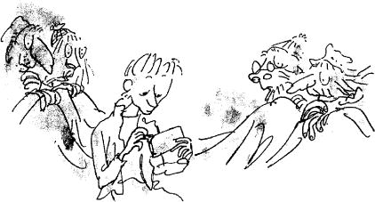

‘Happy birthday!’ cried the four old grandparents, as Charlie came into their room early the next morning.
Charlie smiled nervously and sat down on the edge of the bed. He was holding his present, his only present, very carefully in his two hands. WONKA’S WHIPPLE-SCRUMPTIOUS FUDGEMALLOW DELIGHT, it said on the wrapper.
The four old people, two at either end of the bed, propped themselves up on their pillows and stared with anxious eyes at the bar of chocolate in Charlie’s hands.
Mr and Mrs Bucket came in and stood at the foot of the bed, watching Charlie.
The room became silent. Everybody was waiting now for Charlie to start opening his present. Charlie looked down at the bar of chocolate. He ran his fingers slowly back and forth along the length of it, stroking it lovingly, and the shiny paper wrapper made little sharp crackly noises in the quiet room.
Then Mrs Bucket said gently, ‘You mustn’t be too disappointed, my darling, if you don’t find what you’re looking for underneath that wrapper. You really can’t expect to be as lucky as all that.’
‘She’s quite right,’ Mr Bucket said.
Charlie didn’t say anything.
‘After all,’ Grandma Josephine said, ‘in the whole wide world there are only three tickets left to be found.’
‘The thing to remember,’ Grandma Georgina said, ‘is that whatever happens, you’ll still have the bar of chocolate.’
‘Wonka’s Whipple-Scrumptious Fudgemallow Delight!’ cried Grandpa George. ‘It’s the best of them all! You’ll just love it!’
‘Yes,’ Charlie whispered. ‘I know.’
‘Just forget all about those Golden Tickets and enjoy the chocolate,’ Grandpa Joe said. ‘Why don’t you do that?’
They all knew it was ridiculous to expect this one poor little bar of chocolate to have a magic ticket inside it, and they were trying as gently and as kindly as they could to prepare Charlie for the disappointment. But there was one other thing that the grown-ups also knew, and it was this: that however small the chance might be of striking lucky, the chance was there.
The chance had to be there.
This particular bar of chocolate had as much chance as any other of having a Golden Ticket.
And that was why all the grandparents and parents in the room were actually just as tense and excited as Charlie was, although they were pretending to be very calm.
‘You’d better go ahead and open it up, or you’ll be late for school,’ Grandpa Joe said.
‘You might as well get it over with,’ Grandpa George said.
‘Open it, my dear,’ Grandma Georgina said. ‘Please open it. You’re making me jumpy.’
Very slowly, Charlie’s fingers began to tear open one small corner of the wrapping paper.
The old people in the bed all leaned forward, craning their scraggy necks.
Then suddenly, as though he couldn’t bear the suspense any longer, Charlie tore the wrapper right down the middle… and on to his lap, there fell… a light-brown creamy-coloured bar of chocolate.
There was no sign of a Golden Ticket anywhere.
‘Well – that’s that!’ said Grandpa Joe brightly. ‘It’s just what we expected.’
Charlie looked up. Four kind old faces were watching him intently from the bed. He smiled at them, a small sad smile, and then he shrugged his shoulders and picked up the chocolate bar and held it out to his mother, and said, ‘Here, Mother, have a bit. We’ll share it. I want everybody to taste it.’
‘Certainly not!’ his mother said.
And the others all cried, ‘No, no! We wouldn’t dream of it! It’s all yours!’
‘Please,’ begged Charlie, turning round and offering it to Grandpa Joe.
But neither he nor anyone else would take even a tiny bit.
‘It’s time to go to school, my darling,’ Mrs Bucket said, putting an arm around Charlie’s skinny shoulders. ‘Come on, or you’ll be late.’